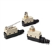

Building Automation
Industrial Automation
Power Automation & Safety


Bangladesh Distributor
General-purpose Horizontal
These compact Horizontal Limit Switches are used applications in which Basic Switches would not provide enough strength. Models with molded terminals are available.
General-purpose Horizontal List
There are 6 products of General-purpose Horizontal.
Small Sealed Switch D4E-[]N
Slim and Compact Switch with Better Seal and Ensuring Longer Service Life than D4E
 Enclosed Switch SHL
Subminiature Enclosed Switch (Measuring 48 x 17.5 x 45 mm) with High Sealing Property
Enclosed Switch ZC-[]55
Small, High-precision Enclosed Switch
Enclosed Switch D4MC
Economical, High Utility Enclosed Switch
Small Enclosed Switches VE
Small, Lightweight Enclosed Switches
Enclosed Switches ZE / ZV / ZV2 / XE / XV / XV2
Long Service Life and Large Breaking Power
Related Contents
- Limit Switches